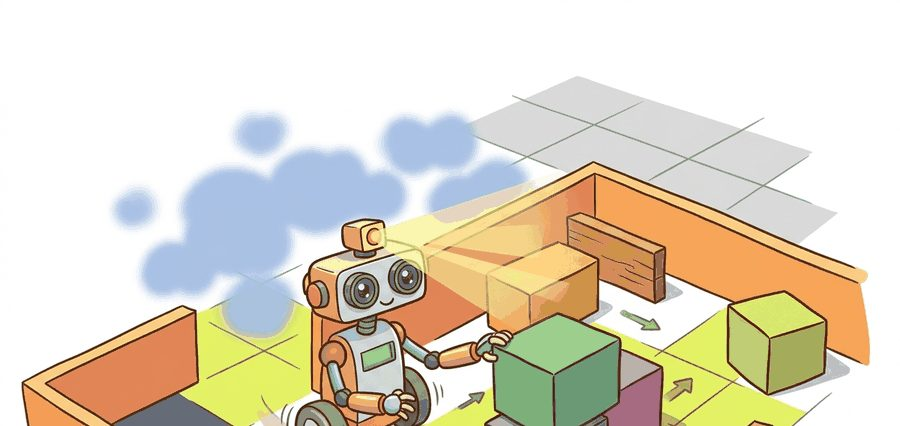
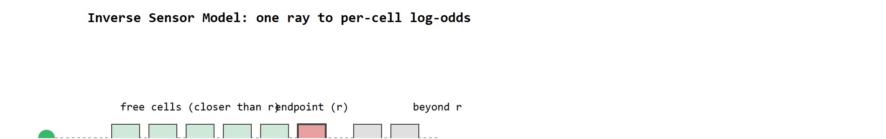
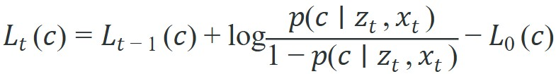

"A grid cell is a decision about where the robot may spend risk."
A Loop Closure That Came Back With Receipts

The log-odds update introduced here is extended in section 29.5, where the occupancy grid becomes one layer inside a full SLAM factor graph. The costmap layers built in this section are the direct input to path planners covered in section 30.1 and section 30.2: the free, lethal, and inflated cell distinctions set up in section 29.4 are exactly what A* and Dijkstra consume when computing traversable routes.
A warehouse robot halts three centimeters from a shelf it has passed a hundred times before. One stale grid cell, never cleared after a box was moved, marks that corridor as occupied. The robot has perfect sensors and a perfect pose estimate, yet it cannot move because its memory is wrong. Occupancy grids are that memory: a probabilistic belief field updated by every sensor ray, encoding free space, obstacles, and honest uncertainty about what has never been seen. As robots enter dynamic environments where objects shift by the minute, knowing how a map was built, and when each cell was last touched, determines whether the planner makes good decisions or freezes at phantom obstacles. You will build and update an occupancy grid from scratch, implement the log-odds update rule, and configure the inflation and unknown-space settings that separate maps that planners trust from maps that merely look clean.
Ask a robot the difference between a hallway it scanned and found empty and a hallway it has never looked down, and a bad map gives the same answer for both: "free." That single confusion is how robots drive confidently into walls they were never told about. A robot map is a probabilistic memory of what sensor rays have implied, tying each cell to a state variable, an uncertainty model, and the next action the robot might take, as Figure 29.4.1 illustrates. Free space, occupied space, and unknown space must stay distinct because a planner should treat unseen cells differently from cells observed as empty. A map that cannot distinguish between "definitely empty" and "never checked" is not a map: it is a wish.
Keeping those three states distinct is not a labeling convention but a consequence of how each cell is updated. Occupancy grids update each cell through inverse sensor models, often using log odds for numerical stability. A range ray decreases occupancy probability along free cells and increases it near the measured endpoint. The map is therefore a belief field, not a bitmap.
The inverse sensor model matters in embodied AI because a physical sensor reports a distance, not a cell state. Without a principled translation from "ray returned at 3.2 m" to per-cell probability changes, the robot either treats every unobserved cell as free (crashes into unmapped walls) or refuses to plan through any unseen space (freezes in novel environments). On a resource-constrained mobile platform, the model also sets the computational budget: a simpler beam model costs microseconds per ray while a more accurate but expensive model stalls the 10 Hz planning loop.
The model treats the sensor ray as a likelihood function over grid cells. Consider a LiDAR (Light Detection and Ranging) return at range $r$. Cells along the ray closer than $r$ receive a small negative log-odds increment as evidence of free space. The cell at range $r$ receives a larger positive increment as evidence of an obstacle. Cells beyond $r$ stay unchanged, because the ray carries no information about them. The sensor's known false-positive and false-negative rates set these increments, so the update follows directly from hardware characterization rather than a hand-tuned heuristic.

A map result is incomplete without resolution, frame, timestamp, update rule, decay policy, inflation radius, and the planner layer that reads it. A clean map image does not prove safe traversability.
To honor that action contract, the informal "belief field" picture needs a precise posterior to update. For occupancy grids, the posterior is a cell-wise belief over free, occupied, and unknown space conditioned on sensor rays and the robot pose estimated by localization. The planner consumes inflation, freshness, and uncertainty, not only a black-and-white bitmap.

The evidence terms are inverse sensor model, ray casting, pose uncertainty, update rate, decay policy, and map resolution. Each one changes whether a cell is safe to traverse or only looks safe in a stale grid.
So far: a cell's belief is a log-odds value, updated additively from ray evidence, with the prior subtracted once per update so it is never double-counted; the worked numbers below show what that update rule does across repeated conflicting scans.
Before reading on, guess: if a robot scans a doorway ten times and each scan returns "free," how many occupied-endpoint hits does it take to flip that cell back above 50% occupancy? In practice this number surprises many readers on first encounter, and the log-odds math below shows exactly why.
Consider a specific case: a LiDAR ray 4 meters long hits a wall. The inverse sensor model assigns log-odds of roughly -0.4 to each of the 39 free-space cells the ray passes through, and +0.9 to the endpoint cell. After ten identical scans the endpoint reaches log-odds +9, which converts to $p \approx 0.9999$ occupied. Each update subtracts the prior term $L_0(c)$ (typically 0, meaning 50% prior) once, so the prior never gets counted twice. Without that subtraction, each update would silently add the prior on top of the evidence, and cells would drift occupied even with no sensor hits. Clamping the log-odds to a range such as $[-5, +5]$ keeps cells recoverable. A cell incorrectly marked occupied can clear again after a handful of free-space rays, rather than requiring hundreds of scans to undo an extreme log-odds value. Without clamping, a cell pounded to log-odds +50 by a static wall needs roughly 125 free-space rays just to cross back below 50% occupancy. With a $[-5, +5]$ clamp, the same recovery takes about 13 rays, so the planner sees a cleared path in under two seconds instead of waiting for the robot to orbit the cell for a full minute. These recovery counts assume one free-space ray per scan cycle at a fixed increment; the actual number of scans needed in practice depends on the sensor's scan rate and how often the affected cell falls inside the field of view.
Subtracting the prior once per update is like a coffee shop loyalty card that starts pre-stamped. If the cashier honors that pre-stamp every visit, you get a free drink too often because the opening bonus gets counted over and over. The prior represents your belief before seeing any evidence; it should shape the starting point but never be re-added as though it were fresh evidence arriving each time you scan. Subtracting $L_0(c)$ once per update cancels that repeated re-stamping so only the new sensor evidence actually moves the belief.
In Nav2's costmap_2d, the log-odds clamp is controlled by the parameters max_obstacle_distance together with the per-layer observation_persistence and, crucially, the OccupancyGrid publisher's track_unknown_space: true flag. If track_unknown_space is left at its default of false, cells that were never observed are silently promoted to "free" in the published costmap even though no ray ever cleared them, causing planners to route through walls or uncharted areas. Set track_unknown_space: true in every static_layer and obstacle_layer configuration block, then verify by checking that the raw /map topic contains -1 (unknown) cells, not only 0 (free) and 100 (occupied) values.
Step 4 names a layer that has not been defined yet: inflation. Inflation takes every cell whose log-odds crosses the occupied threshold (a lethal cell) and raises the cost of nearby free cells too, out to a configured inflation radius, so a planner steers the robot's whole body away from the obstacle rather than routing a path that grazes it edge-to-edge. A cell's raw occupancy probability answers "is this cell occupied," but a planner needs "is this cell safe for a robot with physical width," and inflation is the step that converts one answer into the other. Practically, this means the log-odds map from this section is never handed to a planner directly: it first passes through an inflation layer that expands each lethal cell into a small cost gradient, and that gradient, not the raw probability, is what section 30.1 and section 30.2's route search actually consumes.
Code Fragment 1 is the occupancy update smoke test: one ray should clear free cells, mark an endpoint, and leave unseen space unknown. If that invariant fails, larger maps will fail quietly.
# Apply log-odds updates for free and occupied evidence.
# The probabilities show how repeated rays change a grid cell belief.
import math
def sigmoid(x):
return 1.0 / (1.0 + math.exp(-x))
log_odds = 0.0
for update in [-0.4, -0.4, 0.9]:
log_odds += update
print(f"log_odds={log_odds:.1f}, p_occ={sigmoid(log_odds):.2f}")Expected output interpretation. The two free updates drive the cell toward free, then the occupied endpoint pulls it back to near 0.5. Watch that final value: conflicting evidence leaves the cell ambiguous, so a cautious planner must not treat it as confidently traversable.
log_odds and p_occ after each update to confirm the cell moves gradually rather than flipping on a single ray.Trace a single cell that the planner keeps changing its mind about. Start at the 50% prior, so $L_0 = 0.0$ and $p_{occ} = 0.50$. Free-space increment is $-0.4$, occupied-endpoint increment is $+0.9$, clamp range is $[-5, +5]$.
Ray 1 (free): $L = 0.0 + (-0.4) = -0.4$, so $p_{occ} = \sigma(-0.4) = 0.40$. Cell looks free.
Ray 2 (free): $L = -0.4 + (-0.4) = -0.8$, so $p_{occ} = \sigma(-0.8) = 0.31$. More confidently free.
Ray 3 (occupied endpoint): $L = -0.8 + 0.9 = +0.1$, so $p_{occ} = \sigma(0.1) = 0.52$. One obstacle hit nearly cancels two free rays and pushes the cell back across 50%.
Ray 4 (occupied endpoint): $L = 0.1 + 0.9 = +1.0$, so $p_{occ} = \sigma(1.0) = 0.73$. Now leaning occupied.
Ray 5 (occupied endpoint): $L = 1.0 + 0.9 = +1.9$, so $p_{occ} = \sigma(1.9) = 0.87$. The cell commits to occupied only after consistent evidence.
The takeaway in numbers: it took three occupied hits to overcome two free rays and reach a confident 0.87, because each ray moves the belief by a fixed log-odds step rather than overwriting it. Had the cell been pounded to the $+5$ clamp instead, recovery to below 50% would need about thirteen free rays, not three.
Nav2 costmaps, OctoMap, Voxblox-style volumetric maps, and Open3D point-cloud processing turn this update idea into maintained map layers and visualization workflows. The library path handles ray tracing, inflation, serialization, and map publication.
Use the hand grid update as a regression test, then use OctoMap, costmap_2d, Voxblox, or Nav2 layers for scale. The production tool is allowed to be complex; the occupancy invariant should remain simple.
A common assumption is that an occupancy grid stores a binary label per cell: once a cell is "occupied," that label stays until something explicitly clears it. That assumption is wrong. The grid stores accumulated log-odds evidence, not a deterministic verdict. Each sensor ray contributes an increment derived from the sensor's false-positive and false-negative rates. The update rule subtracts the prior log-odds term once per update; omitting that subtraction silently re-adds the prior as if it were new evidence and drifts cells toward "occupied" with no sensor support. Without log-odds clamping, a cell with many positive scans demands an equally large number of free-space rays to recover, making the map practically irreversible. The correct mental model: every cell holds a recoverable belief that moves in either direction as evidence accumulates, not a sticky label that requires an explicit erase command.
Stale occupancy grids cause silent, hard-to-trace path failures. When a robot maps a corridor, a person walks through, and the robot replans 30 seconds later, the corridor cells may still show "occupied" if the decay policy is too slow or absent. The planner then routes around a phantom obstacle. The failure looks like a planning bug but the root cause is a missing obstacle-age term in the costmap. A grid without a decay or timestamp layer is only safe in static environments; dynamic scenes require explicit cell expiry or a separate dynamic-obstacle layer.
A warehouse mapping log should store raw scans, robot pose, occupancy probabilities, inflation layer, obstacle decay state, planner cost, and recovery action. That single replay explains whether a blocked route was a map problem or a planner choice.
Amazon Robotics drive units reportedly navigate fulfillment-center floors using occupancy grids built from fiducial-marker (a printed pattern of known size and ID that a camera can detect to recover precise position, such as an ArUco or AprilTag sticker on the floor) and LiDAR data, where the log-odds map distinguishes permanently fixed shelving pods from transient obstacles like dropped totes. The decay and clearing policy is what lets thousands of units share one floor without freezing at phantom obstacles after a pod is moved. The same probabilistic grid feeds both the per-unit local planner and the fleet-level traffic coordinator that allocates lanes.
3D Gaussian splatting as a map representation (2024-2026). Rather than maintaining a voxel grid, several labs now represent the environment as a set of learnable 3D Gaussians whose opacity and color encode both geometry and appearance. Gaussian-SLAM (Yugay et al., ICLR 2024) shows that a robot can build and query such a map at real-time rates, recovering traversable surfaces and photometric appearance from a single RGB-D stream. The open embodied question is how to convert per-Gaussian opacity into a planner-consumable cost field without losing the reconstruction's uncertainty estimate.
Language-grounded occupancy maps (2024-2025). Mapping systems now embed vision-language features alongside geometric evidence so a costmap cell can answer queries like "is this region a doorway?" rather than just "is it free?" OpenFusion (Yamazaki et al., ICRA 2025) and the ConceptFusion line of work attach CLIP (Contrastive Language-Image Pre-training) embeddings to each voxel and show that open-vocabulary spatial queries can run at sensor rate on an Orin NX (an NVIDIA embedded GPU module used for onboard robot compute). The embodied constraint is that language features add memory pressure: a 100 m corridor mapped at 5 cm resolution requires tens of gigabytes of feature storage, forcing selective encoding of only the semantically active region around the robot.
Uncertainty-aware neural occupancy fields (2025-2026). Work from the University of Bonn (Stachniss group) and ETH ASL couples implicit neural representations with Bayesian uncertainty estimation, producing per-cell confidence bounds rather than point estimates. This matters for safety-critical navigation because a cell whose occupancy is uncertain should carry a higher traversal cost than one that is confidently free, even when both report the same mean probability. Current systems achieve this on static scenes; handling map drift and moving objects in real time remains unsolved.
Open problem. All three directions above produce richer per-cell beliefs but none provides a principled, computationally bounded protocol for propagating updated beliefs to the inflation layer and downstream planner in a single 10 Hz loop. A tractable thesis contribution would be a formal budget-allocation policy: given a fixed per-cycle update budget in milliseconds, decide which cells to re-evaluate (Gaussian splats, language features, or Bayesian bounds) so that the planner's expected cost error is minimized, with a proof that the policy degrades gracefully when the budget is cut in half.
A grid cell is a decision about where the robot may spend risk.
Can you state the state variables, observation residual, uncertainty representation, replay artifact, and most likely field failure for mapping and occupancy grids? If one field is vague, the estimator is not ready for embodied use.
Mapping and occupancy grids is production-ready only when geometry, uncertainty, timing, and action consequences are tested together.
Run one map update with static obstacles and one with a moved obstacle or stale shelf. Report cell probability, inflation status, planner clearance, and whether recovery behavior invalidates the old route.
Beginner (weekend): Build a 2D occupancy grid from scratch in Python using simulated LiDAR rays in a PyBullet environment: load a simple room, cast rays from a fixed robot pose, apply the log-odds update rule, and visualize the evolving belief map. The key challenge is correctly subtracting the prior term each update so cells do not drift occupied without evidence. Intermediate (1-2 weeks): Integrate a live occupancy grid with Nav2's costmap_2d in a ROS2 + Gymnasium simulation: spawn a differential-drive robot, feed LaserScan messages into the obstacle layer with track_unknown_space: true, add a decay policy for dynamic obstacles, then verify that a human walking through a corridor clears within five seconds and the planner reroutes correctly. The key challenge is tuning the observation persistence and inflation radius so the planner neither freezes at phantom obstacles nor routes through cells that were only transiently free.
Goal: Build a tiny 1D occupancy ray updater and observe empirically how the clamp range controls recovery speed when a cell is wrongly marked occupied.
Tools needed: Python 3 with NumPy and Matplotlib only (no robot stack required). Budget 15 to 30 minutes.
Steps: (1) Write a function that holds a single cell's log-odds and applies a stream of updates from a list, applying np.clip(L, lo, hi) after each step. (2) Feed it 30 occupied-endpoint hits ($+0.9$ each) followed by free rays ($-0.4$ each), and record how many free rays are needed to bring $p_{occ}$ back below 0.5. (3) Plot $p_{occ}$ over the update index using the sigmoid $1/(1+e^{-L})$.
What to vary: the clamp range, trying $[-2,+2]$, $[-5,+5]$, and an unclamped run; also vary the free-ray increment between $-0.2$ and $-0.8$.
What to observe: the unclamped case needs roughly 125 free rays to recover while the $[-5,+5]$ clamp needs about 13; confirm that a tighter clamp recovers faster but also reaches a lower maximum confidence, the core trade-off between map responsiveness and obstacle certainty.
Continue to Section 29.5: Graph-based and visual SLAM, where this state-estimation contract becomes the input to the next embodied capability.
Durrant-Whyte, H. and Bailey, T. "Simultaneous Localization and Mapping." IEEE Robotics and Automation Magazine, 2006. https://ieeexplore.ieee.org/document/1638022
Classic SLAM tutorial that frames the estimation problem and the role of uncertainty.
GTSAM Project. "Factor Graphs and GTSAM." Official documentation. https://gtsam.org/
Primary tool reference for factor graphs, smoothing, pose graphs, and robotics estimation examples.
ROS 2 Navigation Project. "Nav2 documentation." Official documentation. https://navigation.ros.org/
Primary documentation for integrating localization, maps, planners, controllers, behavior trees, and recoveries.